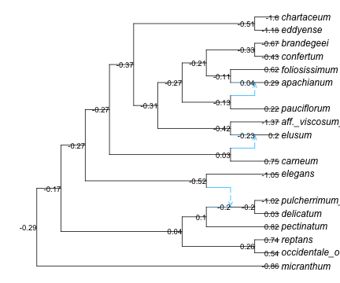

Code
# code from prior sections
using CSV, DataFrames, PhyloNetworks, PhyloPlots, RCall, StatsBase, StatsModels
net = readTopology("data/polemonium_network_calibrated.phy");
for tip in net.node tip.name = replace(tip.name, r"_2$" => s""); endWe load the data at the species (morph) level and focus on log-leaflet-length, without any predictor to predict ancestral states:
traits = CSV.read("data/polemonium_traits_morph.csv", DataFrame)
subset!(traits, :morph => ByRow(in(tipLabels(net)))) # subset of rows
fit = phylolm(@formula(llength ~ 1), traits, net; tipnames=:morph,
withinspecies_var=true, y_mean_std=true)PhyloNetworkLinearModel
Formula: llength ~ 1
Model: Brownian motion
Parameter Estimates, using REML:
phylogenetic variance rate: 0.946928
within-species variance: 0.107488
Coefficients:
─────────────────────────────────────────────────────────────────────────
Coef. Std. Error t Pr(>|t|) Lower 95% Upper 95%
─────────────────────────────────────────────────────────────────────────
(Intercept) -0.293121 0.482432 -0.61 0.5520 -1.31583 0.729589
─────────────────────────────────────────────────────────────────────────
Log Likelihood: -334.4265947492
AIC: 674.8531894984From the intercept coefficient we get a prediction at the root (-0.293 on the log scale) but that’s it.
This is typically called “ancestral state reconstruction” but prediction seems a more accurate term. This technique estimates the mean of nodes in the network: ancestral or extant species, conditional on the data. It’s important to look at prediction intervals, not just a “point” estimate.
| Row | nodeNumber | condExpectation |
|---|---|---|
| Int64 | Float64 | |
| 1 | -5 | 0.257485 |
| 2 | -8 | -0.201828 |
| 3 | 7 | -0.198663 |
| 4 | -6 | 0.100981 |
| 5 | -4 | 0.0403308 |
| 6 | -10 | -0.51602 |
| 7 | -12 | 0.0315958 |
| 8 | 10 | -0.230829 |
| 9 | -15 | -0.421436 |
| 10 | -18 | -0.130946 |
| 11 | 14 | 0.0351552 |
| 12 | -20 | -0.111023 |
| 13 | -22 | -0.326108 |
| ⋮ | ⋮ | ⋮ |
| 28 | 17 | -0.427755 |
| 29 | 5 | 0.0306633 |
| 30 | 19 | -1.17776 |
| 31 | 8 | -1.05488 |
| 32 | 11 | 0.204422 |
| 33 | 16 | 0.621485 |
| 34 | 1 | -0.863985 |
| 35 | 2 | 0.542107 |
| 36 | 13 | 0.220229 |
| 37 | 4 | 0.81878 |
| 38 | 6 | -1.02358 |
| 39 | 3 | 0.744526 |
This output is somewhat cryptic though, because each row refers to a node number and it’s unclear which are tips, which are internal nodes, and which node has what number. We can also get prediction intervals (sometimes called confidence intervals) but with the same cryptic ordering of nodes:
39×2 Matrix{Float64}:
-0.522479 1.03745
-0.79781 0.394155
-0.790367 0.393041
-0.691256 0.893218
-0.657143 0.737805
-1.31901 0.286974
-0.828789 0.891981
-0.939729 0.478071
-1.12753 0.284662
-0.89236 0.630467
-0.671926 0.742237
-0.762605 0.540559
-1.00861 0.35639
⋮
-0.6454 -0.21011
-0.067455 0.128782
-1.56893 -0.786602
-1.206 -0.903747
0.0199769 0.388867
0.579511 0.663459
-0.944193 -0.783777
0.489289 0.594924
0.119035 0.321423
0.588948 1.04861
-1.26665 -0.780508
0.645395 0.843657First, we build a data frame to get this information in a more interpretable format for the tips. Below is one way to map the morph names in the order in which they appear in the data, to node numbers in the network:
tipnames_trait = traits.morph
function get_morph_nodenumber(label)
i = findfirst(n -> n.name == label, net.node)
net.node[i].number
end
tipnumber = [get_morph_nodenumber(label) for label in tipnames_trait]
hcat(tipnames_trait, tipnumber)17×2 Matrix{Any}:
"aff._viscosum_sp._nov." 12
"apachianum" 15
"brandegeei" 18
"carneum" 9
"chartaceum" 20
"confertum" 17
"delicatum" 5
"eddyense" 19
"elegans" 8
"elusum" 11
"foliosissimum" 16
"micranthum" 1
"occidentale_occidentale" 2
"pauciflorum" 13
"pectinatum" 4
"pulcherrimum_shastense" 6
"reptans" 3With this mapping, we can replace the node numbers by the morph names, and add other information from the trait data such as the sample size for each morph:
tipindex_asr = indexin(tipnumber, asr_pred.nodeNumber)
res_tip = DataFrame(
morph = tipnames_trait, # morph names, ordered as in the trait data frame
samplesize= traits.llength_n,
observed = traits.llength,
predicted = asr_pred.condExpectation[tipindex_asr],
low = predint(asr)[tipindex_asr,1],
high = predint(asr)[tipindex_asr,2]
)| Row | morph | samplesize | observed | predicted | low | high |
|---|---|---|---|---|---|---|
| String31 | Int64 | Float64 | Float64 | Float64 | Float64 | |
| 1 | aff._viscosum_sp._nov. | 38 | -1.371 | -1.36551 | -1.47801 | -1.25302 |
| 2 | apachianum | 62 | 0.289364 | 0.287407 | 0.199311 | 0.375502 |
| 3 | brandegeei | 58 | -0.67488 | -0.673295 | -0.764401 | -0.582189 |
| 4 | carneum | 47 | 0.75653 | 0.753233 | 0.652009 | 0.854457 |
| 5 | chartaceum | 16 | -1.61233 | -1.59963 | -1.77254 | -1.42672 |
| 6 | confertum | 10 | -0.430446 | -0.427755 | -0.6454 | -0.21011 |
| 7 | delicatum | 50 | 0.0316277 | 0.0306633 | -0.067455 | 0.128782 |
| 8 | eddyense | 3 | -1.21937 | -1.17776 | -1.56893 | -0.786602 |
| 9 | elegans | 21 | -1.06016 | -1.05488 | -1.206 | -0.903747 |
| 10 | elusum | 14 | 0.21314 | 0.204422 | 0.0199769 | 0.388867 |
| 11 | foliosissimum | 274 | 0.622095 | 0.621485 | 0.579511 | 0.663459 |
| 12 | micranthum | 75 | -0.864849 | -0.863985 | -0.944193 | -0.783777 |
| 13 | occidentale_occidentale | 173 | 0.542457 | 0.542107 | 0.489289 | 0.594924 |
| 14 | pauciflorum | 47 | 0.222039 | 0.220229 | 0.119035 | 0.321423 |
| 15 | pectinatum | 9 | 0.834157 | 0.81878 | 0.588948 | 1.04861 |
| 16 | pulcherrimum_shastense | 8 | -1.04488 | -1.02358 | -1.26665 | -0.780508 |
| 17 | reptans | 49 | 0.746643 | 0.744526 | 0.645395 | 0.843657 |
The predicted species means are close, but not exactly equal, to the observed means in each sample. This is because phylogenetic relatedness is used to share information across species. Little is shared for species with a large sample size, such as foliosissimum. But for species with a small sample size, such as eddyense, more information is borrowed from closely-related species. This is highlighted below:
To look at ancestral states, it’s best to map the predictions and intervals onto the network. To do so, we will build a data frame containing annotations to be placed at nodes, then plot the network with this data frame as argument.
| Row | nodeNumber | PredInt |
|---|---|---|
| Int64 | Abstract… | |
| 1 | -5 | 0.26 |
| 2 | -8 | -0.2 |
| 3 | 7 | -0.2 |
| 4 | -6 | 0.1 |

| Row | nodeNumber | PredInt |
|---|---|---|
| Int64 | Abstract… | |
| 1 | -5 | [-0.52, 1.04] |
| 2 | -8 | [-0.8, 0.39] |
| 3 | 7 | [-0.79, 0.39] |
| 4 | -6 | [-0.69, 0.89] |